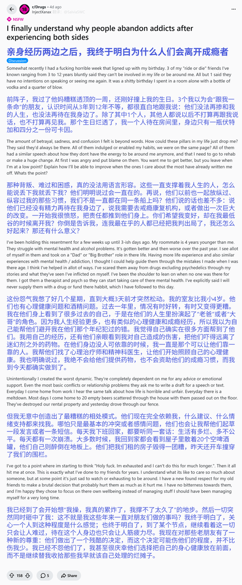

椎名Shiina2.0
@sacred1124
@SalviaSWC 很多成瘾者应该都会有这种经历

鼠尾草～🌿
@SalviaSWC
药物报告day34——成瘾者的社会困境
Reddit上一小哥称，自己在人生低谷时被朋友抛弃，他由此联想到其他有相似问题的人与自己相处时也有许多困境，才恍然觉悟问题所在🥺
我们也要多多反思一下呢，大家在相处时，不要给对方太大的压力哦，好嘛🥹
文字版链接：https://t.co/ZKl4leFfsX https://t.co/W1CaqEDvLR https://t.co/5M2l6vdogq